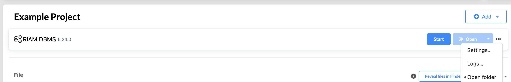
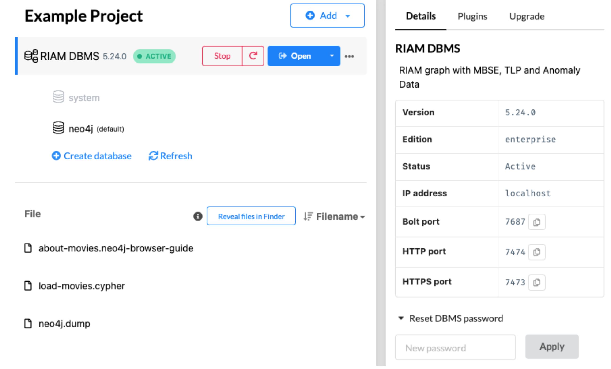

Knowledge Graph Construction Through Neo4j¶
Install Additional Required Libraries¶
In order to communicate with neo4j Desktop graph database, the neo4j_python_driver need to be installed:
pip install neo4j
Connect to Neo4j via DACKAR Py2Neo Module¶
Set up Neo4j import folder path This directory is used to store data files intended for bulk import operations. The location of this directory can be configured in the Neo4j configuration file (
neo4j.conf). By default, the import directory is located at:$NEO4J_HOME/import. Here,$NEO4J_HOMErepresents the root directory of your Neo4j installation. To change the import directory, you can modify thedbms.directories.importsetting in theneo4j.conffile. For example:dbms.directories.import=/path/to/your/import/directoryMake sure to replace
/path/to/your/import/directorywith the actual path you want to use for your import files. After making changes to theneo4j.conffile, you will need to restart the Neo4j server for the changes to take effect.Alternative way to set up Neo4j import folder path Open the settings and replace
dbms.directories.importwith the actual path you want to use for your import files.Start Neo4j desktop DBMS, set password if needed. This password will be used in the Python driver to connect to the DBMS database.
Load DACKAR
Py2Neomodule to loadcsvfiles into Neo4j DBMS.from dackar.knowledge_graph.py2neo import Py2Neo # Create python to neo4j driver uri = "neo4j://localhost:7687" # for a cluster pwd = "123456789" # user need to provide the DBMS database password py2neo = Py2Neo(uri=uri, user='neo4j', pwd=pwd) # clean up the DBMS py2neo.reset() # Load node data file_path = './test_nodes.csv' # node label label = 'MBSE' # node attributes: keys, values are corresponding to neo4j node attributes and csv column names, respectively attribute = {'nodeId': 'nodeId', 'label': 'label', 'ID': 'ID', 'type': 'type'} # API to load csv files to create nodes in neo4j py2neo.load_csv_for_nodes(file_path, label, attribute) # Load relationship data file_path = 'test_edges.csv' l1 = 'MBSE' # label for source node # node attributes: keys, values are corresponding to neo4j node attributes and csv column names, respectively p1 = {'nodeId': 'sourceNodeId'} # label for second node l2 = 'MBSE' # node attributes: keys, values are corresponding to neo4j node attributes and csv column names, respectively p2 = {'nodeId': 'targetNodeId'} # label for neo4j edge lr = 'MBSE_link' # edge attributes: keys, values are corresponding to neo4j node attributes and csv column names, respectively pr = {'prop': 'type'} # API to load csv files to create relations in neo4j py2neo.load_csv_for_relations(file_path, l1, p1, l2, p2, lr, pr)
{kind=link}
{kind=link}
Knowledge Graph Construction Through Schemas¶
Knowledge Graph Schemas The objective of a schema is to provide precise guidelines on the construction of knowledge graphs. A schema in a knowledge graph defines the structure (i.e., what types of nodes and edges are allowed), semantics, and constraints of the data (i.e., data type formats) represented in the graph. It formalizes the meaning of entities (nodes) and relationships (edges), ensuring that data is interpreted consistently across systems and users. In addition, it provides a common framework to unify disparate data sources under a shared vocabulary, which is especially valuable in enterprise environments where data silos are common. By encoding relationships and constraints, schemas enable advanced reasoning (such as deducing new facts from existing ones) using logic-based AI/ML techniques. In AI contexts, schemas help large language models and other algorithms understand the structure and semantics of the data, enabling more accurate parsing, querying, and text generation. In DACKAR a schema is defined through a .toml file where the allowed set of nodes and relations are defined. For each of these two entities, a textual description is provided along with the specifics of the allowed properties (i.e., name, data-type, required/optional setting, property description). An example, the following schema defines two nodes (i.e., cause and effect nodes) and a relation between them
Example of knowledge graph schema¶1title = "sampleSchema" 2version = 1.0 3 4# ==================== 5# Nodes 6# ==================== 7[node.cause] 8node_description = """causal node""" 9node_properties = [{name = "prop1", type = "string" , optional = false, description = 'first causal property'}, 10 {name = "prop2", type = "integer", optional = false, description = 'second causal property'}] 11 12[node.consequence] 13node_description = """consequence node""" 14node_properties = [{name = "ID_A", type = "boolean" , optional = false, description = 'first consequence property'}, 15 {name = "ID_B", type = "floating", optional = false, description = 'second consequence property'}] 16 17# ==================== 18# Relations 19# ==================== 20[relation.causality] 21relation_description = """Indicates cause-effect relation""" 22from_entity = "cause" 23to_entity = "consequence" 24relation_properties = [{name = "intensity", type = "floating", optional = false, description = 'Strength of the cause-effect relation'}]
In this example, each node is characterized by two properties (prop1 and prop2 for the cause node, ID_A and ID_B for the consequence node). The defined relation represents a cause-effect relation that links a “cause” node to a “consequence” node where one single property is defined (i.e., “intensity”). In DACKAR the user can define multiple schemas (each described in its own .toml file) depending on the specific application. The following checks for each provided schema are performed: - Validation against main schema - Data type check for each property - Check for redundancy against other nodes/relations defined in other schemas
In this context, knowledge graphs are constructed from pandas dataframes. In addition, the user is required to provide a construction schema that defines the nodes and relations to be populated in the knowledge graph. A construction schema is defined in the form of a python dictionary. The following example indicates that two nodes are created: - Node with label nodeLabel1 is characterized by two properties (i.e., property1 and property2) whose values are indicated in the columns colA and colB of the provided dataframe - Node with label nodeLabel2 is characterized by one property (i.e., property3) whose values are indicated in column colC of the provided dataframe and one relation is also created: - Relation of type relationType links a node with label nodeLabel1 (with property1 values contained in col1 of the provided dataframe) to a node with label nodeLabel2 (with property3 values contained in col2 of the provided dataframe)
constructionSchema = { 'nodes': { 'nodeLabel1': { 'property1': 'dataframe.colA', 'property2': 'dataframe.colB' }, 'nodeLabel2': { 'property3': 'dataframe.colC' } }, 'relations': { 'causality': { 'source': {'cause.prop1': 'A'}, 'target': {'consequence.ID_B': 'D'}, 'properties': {'intensity': 'prop_rel'} } } }